Locații de nuntă în județul Brașov
- locații în director
- 100
- cu cazare în registrul SITUR
- 36
- medie ponderată Google
- 4,4 / 5
- evaluări Google
- 221.422
Cum alegi unde mergi la vizionare
În județul Brașov, o terasă în Poiana Brașov și o proprietate din Moieciu de Sus pot cere planuri foarte diferite pentru transport și vreme. La hotelurile unde apare o ceremonie în aer liber, cereți să vedeți la aceeași vizită terasa și încăperea rezervată pentru ploaie.
La DIAMANT Events apare cununia în grădină. O comparație concretă pentru vizionări este între o asemenea grădină din Brașov și terasa unui hotel din Poiana Brașov. Încercați ambele variante împreună cu o rudă care va veni la ceremonie. Cum ajunge de la mașină până la scaun? Se poate retrage la căldură fără să traverseze ringul sau zona în care lucrează ospătarii?
Două adrese pentru o zi de vizionări
Pe hartă, între aceste două proprietăți sunt 4,0 km în linie dreaptă. Deschide indicațiile de drum din fișe ca să vezi traseul pe șosea înainte de a stabili a doua întâlnire.
- Amfiteatrul Transilvania · F84J+75, 507131 Moieciu de Sus
- Hotel Turnul · Strada Principală nr. 394, 507135 Moieciu de Jos
Spații exterioare menționate de operatori
- Ana Hotels Bradul Poiana Brașov · Nuntă pe terasa cu vedere la munte
- Ana Hotels Sport Poiana Brașov · Ceremonie în aer liber
- DIAMANT Events · Cununie în grădină
Explorează după localitate
- Bran 13 locații
- Brașov 33 de locații
- Codlea o locație
- Cristian o locație
- Drumul Carului o locație
- Fundata 2 locații
- Ghimbav 3 locații
- Hălchiu o locație
- Hărman 3 locații
- Hoghiz o locație
- Moieciu de Jos 4 locații
- Moieciu de Sus 5 locații
- Poiana Brașov 19 locații
- Poiana Mărului o locație
- Predeluț 2 locații
- Săcele o locație
- Șimon 3 locații
- Timișu de Jos 4 locații
- Zărnești o locație
Toate locațiile din județul Brașov
Ordinea ține cont de nota Google și de numărul evaluărilor. Cum calculăm ordinea
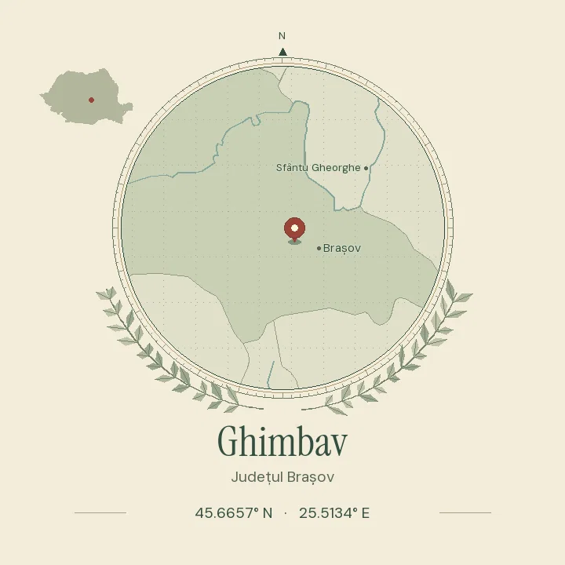
Hartă ilustrată Ghimbav · Local pentru evenimente
DIAMANT Events
Sală de evenimente în Ghimbav cu nota 5 din 2.206 de evaluări, terasă de vară pentru nunți și grădină pentru cununii.
Strada Făgărașului 44, 507075 Ghimbav+40 784 202 882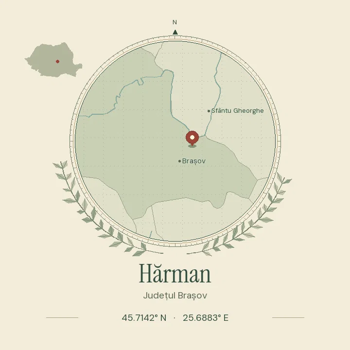
Hartă ilustrată Hărman · Sală de nunți
MK1930 Event Barn – Nunti & Evenimente Brasov
MK1930 Event Barn – Nunti & Evenimente Brasov, Hărman. La MK1930, hambarul și grădina de alături lasă loc pentru două ritmuri ale zilei.
Strada Mihai Viteazul 436, 507085 Hărman+40 743 087 600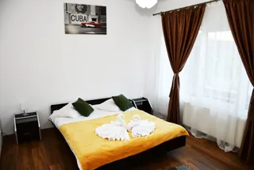
Fotografie a locației · Sursa fotografiei Bran · Vilă
Vila Vibrant
Vila Vibrant din Bran are camere spre curte și grădină, terasă și un apartament cu două camere. Aflați ce oferă cazarea pentru familia mirilor.
Strada Valea Porţii 220, 507025 Bran+40 742 376 542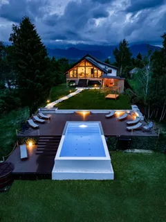
Fotografie a locației · Sursa fotografiei Drumul Carului · Casă de vacanță
StockEstate Moieciu
La StockEstate Moieciu, un oaspete descrie piscina încălzită și perspectiva de care s-a bucurat chiar din apă.
E574 56d, 507132 Drumul Carului+40 750 464 280
Fotografie a locației · Sursa fotografiei Brașov · Local pentru evenimente
Naturalia Inn
Naturalia Inn, Brașov. La Naturalia, un cuplu și-a ales locul după ce l-a văzut întâi în fotografii, apoi la fața locului.
Piața Unirii street, 4th, 500127 Brașov+40 721 331 977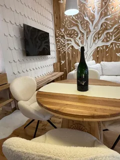
Fotografie a locației · Sursa fotografiei Zona Zărnești · Căsuță
La Căsuțe Bran
La Căsuțe Bran, Brașov. O căsuță din lemn masiv, propria curte și un chec pregătit de gazde apar în relatarea unei sosiri la Bran.
Strada Branului+40 722 576 606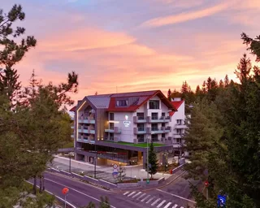
Fotografie a locației · Sursa fotografiei Poiana Brașov · Local pentru evenimente
Hotel Simona Halep - Poiana Brasov
Un grup venit cu o sărbătorită la hotelul din Poiana Brașov amintește atenția acordată acesteia de către personal și timpul petrecut în zona spa.
Strada Poiana Ruia 1, 500001 Poiana Brașov+40 730 124 125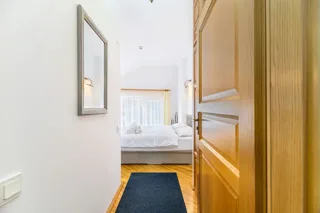
Fotografie a locației · Sursa fotografiei Brașov · Pensiune
Pensiunea Casa Bono - Cazare Brasov
Pensiunea Casa Bono - Cazare Brasov. Pentru rudele cazate, poți cere un contact precis pentru sosiri și detaliile de predare a camerelor.
Strada Neagoe Basarab 23B, 500002 Brașov+40 771 290 059
Fotografie a locației · Sursa fotografiei Poiana Brașov · Apartament în regim hotelier
Elexus Apartments Poiana Brasov
Elexus Apartments Poiana Brasov, Brașov. Dacă rezervi mai multe apartamente pentru familie, cere descrierea fiecăruia în confirmare.
Strada Doinașului 15, 500001 Poiana Brașov+40 752 050 440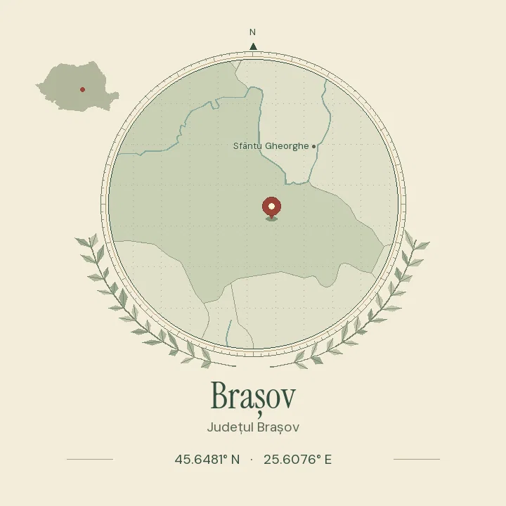
Hartă ilustrată Brașov · Local pentru evenimente
Rockstadt
Un vizitator descrie Rockstadt drept club cu concerte rock în centrul Brașovului și spune că a găsit locuri de parcare în zonă.
Str. Nicolae Titulescu 2P, 500010 Brașov+40 770 800 497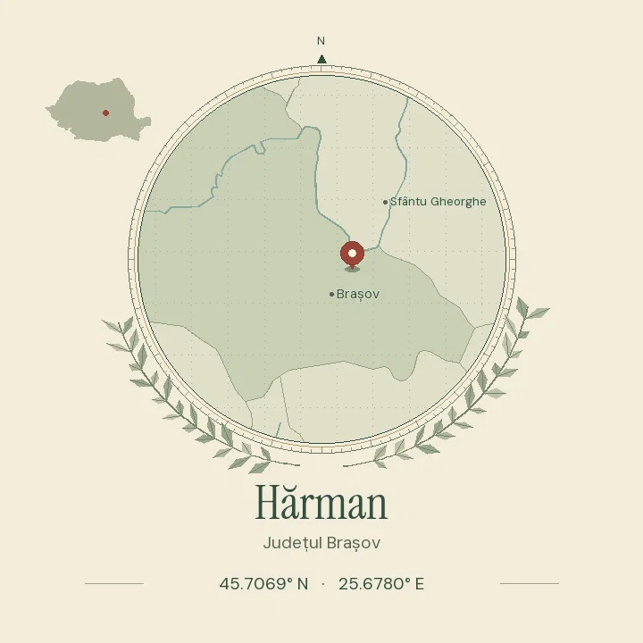
Hartă ilustrată Hărman · Local pentru evenimente
Kastel Transylvania
Kastel Transylvania din Hărman oferă trei săli, ceremonie în curte sau grădină, restaurant propriu și cazare. Descoperiți spațiile dedicate nunții.
Aleea 14 37A, 507085 Hărman+40 729 882 991
Fotografie a locației · Sursa fotografiei Brașov · Hotel
Schuster Boarding House
Schuster Boarding House. Un oaspete de la Schuster a remarcat liniștea cerută după ora 22 și faptul că pentru masaj era nevoie de programare înainte de sosire.
Strada Peneș Curcanul 5, 500015 Brașov+40 368 440 440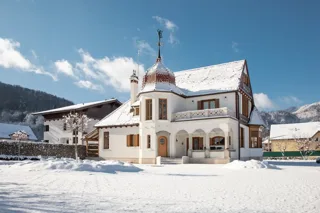
Fotografie a locației · Sursa fotografiei Brașov · Local pentru evenimente
Prestigio Events | Villa HePa
Prestigio Events | Villa HePa, Brașov. Un cuplu își amintește concret luna în care s-a căsătorit la Prestigio Events, mai 2025.
Strada Lacurilor Nr. 35, 35Bis, 500301 Brașov+40 733 833 263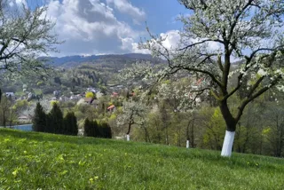
Fotografie a locației · Sursa fotografiei Brașov · Bed & Breakfast
Pensiunea Toscana
Pensiunea Toscana, Brașov. De la Toscana, un oaspete descrie priveliștea către Poiana Brașov, atât de pe balconul camerei, cât și de pe terasă.
Strada Stejerișului 40, 500122 Brașov+40 368 462 217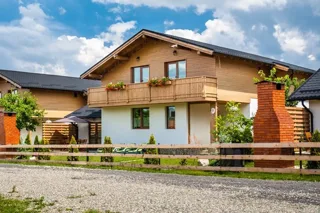
Fotografie a locației · Sursa fotografiei Bran · Casă de vacanță
Green Resort Bran
Green Resort Bran oferă case cu terasă, curte și grătar individual. Comparați configurațiile de cazare pentru familiile venite la cununie.
Strada Branului nr 47, 505800 Bran+40 748 120 845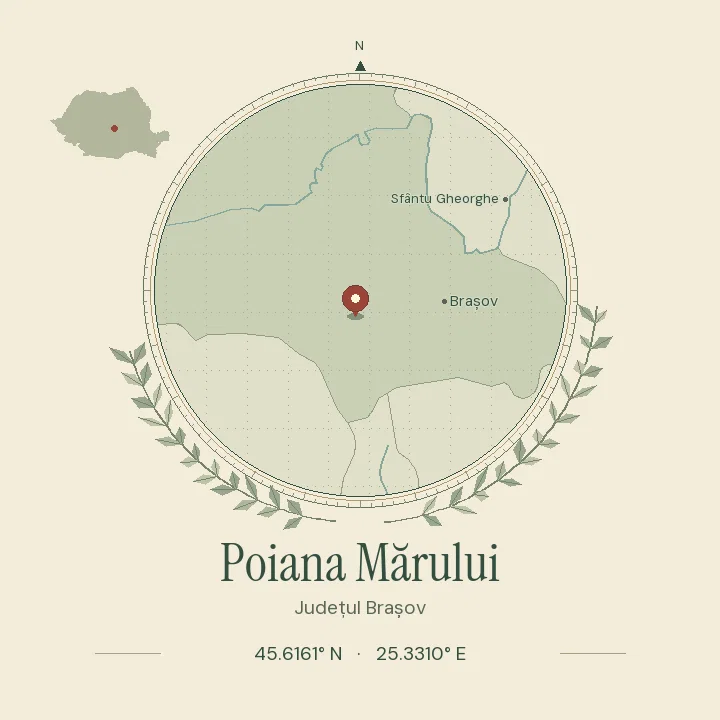
Hartă ilustrată Poiana Mărului · Cabană
Conacul din Pădure
La Conacul din Pădure, un oaspete descrie foișorul suspendat, grătarul din cărămidă și bucătăria dotată inclusiv cu mașină de spălat vase.
Poiana Mărului Nr. 510, 507160 Poiana Mărului+40 748 130 838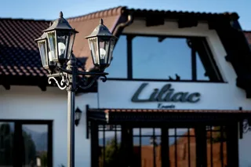
Fotografie a locației · Sursa fotografiei Hărman · Local pentru evenimente
Liliac Events
Liliac Events, Hărman. La Hărman, o vizitatoare a remarcat contrastul dintre încăperile luminoase și grădinile dinspre lac.
Valea Mare 77, 507085 Hărman+40 752 280 649
Hartă ilustrată Bran · Cazare în regim hotelier
Micul Castel
Un călător descrie Micul Castel ca fiind retras la câteva minute de drumul principal care duce la castelul din Bran.
Strada General Traian Moșoiu 2, 507025 Bran+40 742 044 598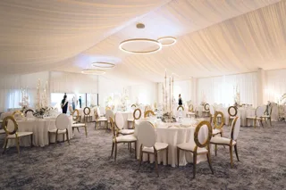
Fotografie a locației · Sursa fotografiei Săcele · Local pentru evenimente
Jardin Events
Jardin Events din Săcele are cort de evenimente, sală panoramică și restaurant lângă lac. Vedeți exemple din meniu și când are loc degustarea.
Strada Valea Largă 57, 505600 Săcele+40 775 500 600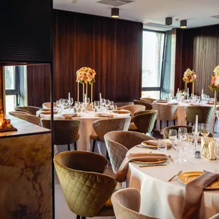
Fotografie a locației · Sursa fotografiei Poiana Brașov · Local pentru evenimente
Elexus Ballroom
La Elexus Ballroom, un cuplu descrie propria nuntă ca restrânsă și spune că a primit atunci un apartament și șampanie din partea locației.
Strada Doinașului 15, 500001 Poiana Brașov+40 747 148 714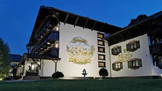
Fotografie a locației · Sursa fotografiei Șimon · Local pentru evenimente
Brandeberg Pensiune & Restaurant
Papanași, gulaș și porții mari la Șimon, cu 4.805 de evaluări pe Google. Ce să verifici la Brandeberg dacă vrei o petrecere privată.
Strada Iancu Gonțea 189, 507028 Șimon+40 752 799 399
Fotografie a locației · Sursa fotografiei Brașov · Hotel
Kronwell
Un vizitator de la Kronwell a apreciat sauna și jacuzziul, însă i s-a părut dificilă intrarea în parcarea subterană.
Bulevardul Gării 7A, 500203 Brașov+40 368 730 800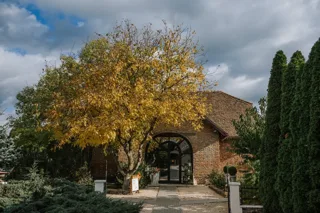
Fotografie a locației · Sursa fotografiei Hălchiu · Local pentru evenimente
Conacul Heldsdorf
Conac de nunți în Hălchiu, județul Brașov: ceremonie în curte, sală cu grinzi aparente, camere pentru pregătiri; 4,7 din 1.029 de evaluări.
Strada Ghimbavului 23-24, 507080 Hălchiu+40 755 297 526
Fotografie a locației · Sursa fotografiei Poiana Brașov · Restaurant
Hotel Casa Viorel
Hotel cu restaurant, foișor și grădină spre pădure în Poiana Brașov, cu evenimente private pe site; recenzii mixte despre camere și servire.
Strada Poiana lui Stechil 20, 500001 Poiana Brașov+40 730 084 085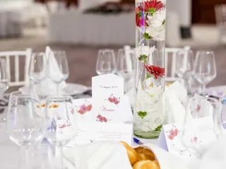
Fotografie a locației · Sursa fotografiei Brașov · Centru de evenimente
Q Events Center
Q Events Center. Un cuplu care și-a ținut nunta la Q Events Brașov vorbește în primul rând despre șeful de sală și implicarea lui pe parcursul serii.
Calea București 229, Brașov+40 799 704 704
Fotografie a locației · Sursa fotografiei Brașov · Sală de nunți
Belvedere Events
O pereche româno-daneză a ales Belvedere Events pentru a aduna la aceeași nuntă invitați din țară și din străinătate.
Strada Stejerișului 26, 500122 Brașov+40 735 404 165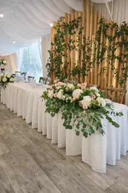
Fotografie a locației · Sursa fotografiei Ghimbav · Sală de nunți
Kron Event Center
Sală de nunți în Ghimbav cu salon de până la 300 de persoane, grădină pentru ceremonie și cazare. Ce laudă mirii din 2026 și ce să întrebi.
Strada Sânzienei, 507075 Ghimbav+40 740 418 186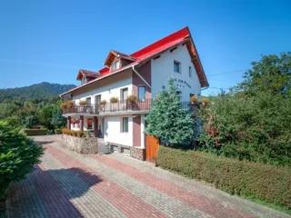
Fotografie a locației · Sursa fotografiei Brașov · Pensiune
Casa din Noua
Pensiune mică la marginea Brașovului, cu curte, grătar și bucătărie comună; 4,7 din 235 de evaluări. Bună pentru cazarea invitaților.
Strada Gării Noua 23, 500314 Brașov+40 745 089 339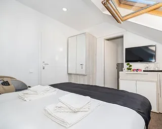
Fotografie a locației · Sursa fotografiei Brașov · Bed & Breakfast
Pensiunea Bada Bing
Pensiunea Bada Bing. În cazul Bada Bing, un vizitator spune că a avut dificultăți în a găsi loc de parcare și că s-ar fi bucurat de un foișor.
Strada Independenței 14, 500157 Brașov+40 736 926 269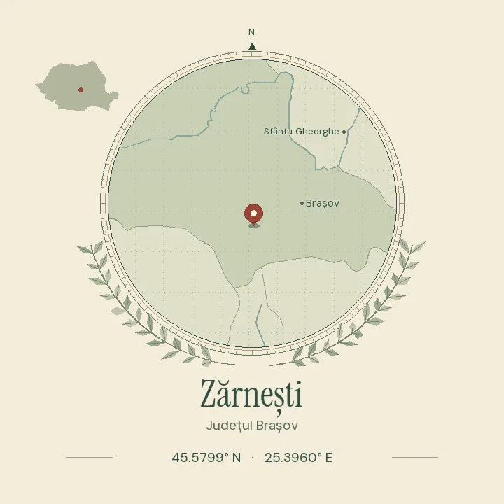
Hartă ilustrată Zărnești · Pensiune
Conacul Filon
Pensiune în Zărnești lăudată de grupurile școlare pentru mâncare proaspătă și camere curate. Ce să întrebi pentru închirierea integrală la un eveniment.
Strada Izvorului, 505800 Zărnești+40 753 594 449
Fotografie a locației · Sursa fotografiei Poiana Brașov · Restaurant
Stâna Turistică Sergiana
Stâna Turistică Sergiana. Un grup de patruzeci de persoane a găsit la Stâna Turistică un foc aprins afară și a urmărit apusul printre copaci.
Strada Păstorului 5, 500001 Poiana Brașov+40 726 366 147
Fotografie a locației · Sursa fotografiei Moieciu de Sus · Hotel
Amfiteatrul Transilvania
Hotel cu amfiteatru și panoramă montană la Moieciu de Sus, 4,6 din 6.001 de evaluări. Drum pietruit îngust și recenzii critice la restaurant în 2026.
F84J+75, 507131 Moieciu de Sus+40 755 000 999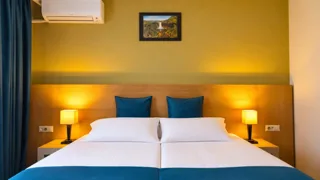
Fotografie a locației · Sursa fotografiei Poiana Brașov · Hotel
Hotel Escalade
Hotel Escalade, Poiana. Un vizitator la Escalade precizează că a venit numai la restaurant și a comandat burgeri de vită și salată Caesar.
Strada Poiana Soarelui 160, 500001 Poiana Brașov+40 752 333 645
Fotografie a locației · Sursa fotografiei Brașov · Hotel
Belfort Hotel
Hotel de 3 stele lângă promenada de sub Tâmpa, cu mic dejun panoramic la etajul 6. Ce să întrebi despre nunți, parcare și accesul invitaților.
Strada Constantin Dobrogeanu-Gherea 4c, 500003 Brașov+40 368 005 181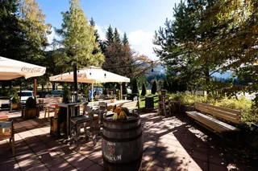
Fotografie a locației · Sursa fotografiei Poiana Brașov · Hotel
Casa Vlasin Pensiune&Restaurant
Pensiune cu restaurant în Poiana Brașov, lăudată pentru ciorba ardelenească și papanași; 4,6 din 1.242 de evaluări, cu critici la curățenie.
Strada Poiana Soarelui 221, 500001 Poiana Brașov+40 730 015 560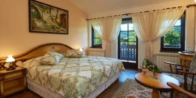
Fotografie a locației · Sursa fotografiei Cristian · Hotel
Conacul Ambient
Hotel pentru familii în Cristian, cu piscine, saună și locuri de joacă, cazare de la 79 € pe noapte. Ce spun oaspeții și ce să întrebi despre evenimente.
Strada Griviţei 5, 507055 Cristian+40 732 200 900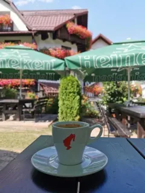
Fotografie a locației · Sursa fotografiei Moieciu de Sus · Restaurant
Pensiunea Nicoleta - Moieciu de Sus
Pensiunea Nicoleta - Moieciu de Sus. Dacă vreți și o masă de cadouri, întrebați dacă aceasta ia locul uneia dintre cele opt sau poate sta în foișor.
Strada Valea Băngăleasa 138, 507134 Moieciu de Sus+40 745 022 074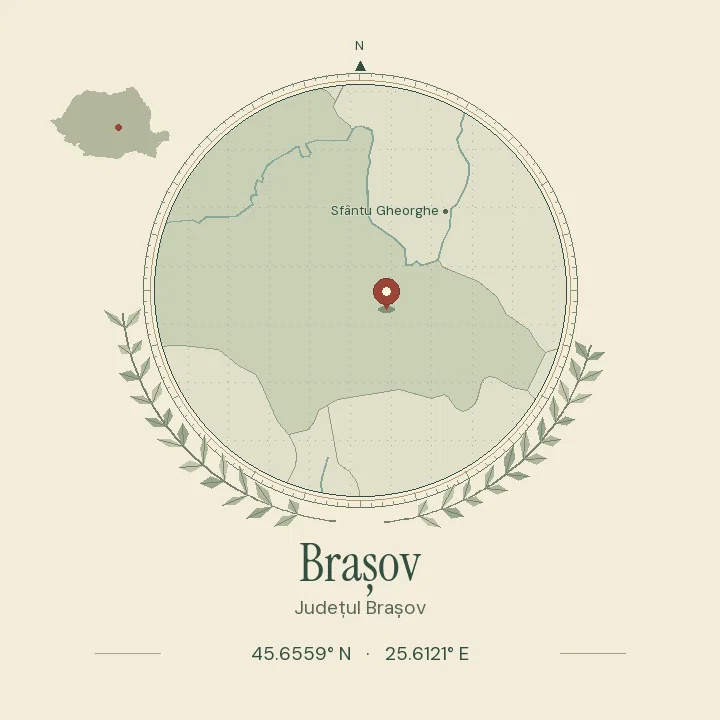
Hartă ilustrată Brașov · Hotel
Victoria Bulevard Hotel
Victoria Bulevard Hotel. Un oaspete care revine de mai mult timp la Victoria Bulevard vorbește despre confortul camerelor și priveliștea de care s-a bucurat.
Bulevardul Victoriei 6A, 500214 Brașov+40 774 444 445
Fotografie a locației · Sursa fotografiei Bran · Hotel
Conacul Törzburg
Conacul Törzburg are două terase lângă Castelul Bran, restaurant, bar și camere cu vedere la castel. Descoperiți diferențele dintre spații.
Sextil Pușcariu nr.3, 507025 Bran, Brașov+40 722 721 724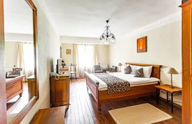
Fotografie a locației · Sursa fotografiei Moieciu de Jos · Restaurant
Hotel Turnul
Hotel Turnul, Moieciu de Jos. Își amintește cina la restaurant și faptul că recepția a pregătit cafea și pachete pentru drumeție.
Strada Principală nr. 394, 507135 Moieciu de Jos+40 752 077 677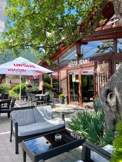
Fotografie a locației · Sursa fotografiei Bran · Restaurant
Casa Centiu - Restaurant Bran
Casa Cențiu are restaurant tradițional cu terasă, grădină și două pensiuni lângă Bran. Vedeți câte persoane pot rămâne peste noapte și regulile casei.
Strada Pe Țarină 58, 507025 Bran+40 721 920 380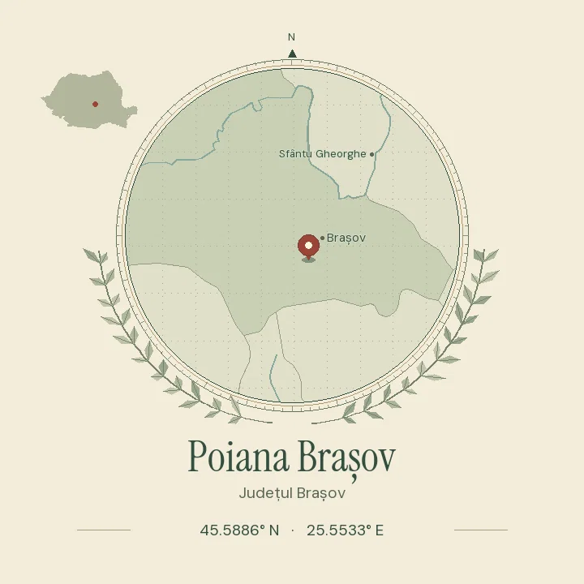
Hartă ilustrată Poiana Brașov · Hotel
Swissôtel Poiana Brasov
Swissôtel Poiana Brasov, Brașov. Un oaspete care a stat la Swissôtel în septembrie relatează că parcarea se achita separat de noaptea de cazare.
Drumul Sulinar 9, 500001 Poiana Brașov+40 368 520 500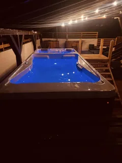
Fotografie a locației · Sursa fotografiei Brașov · Hotel
Belvedere Resort Moieciu
Resort în Moieciu închiriat integral pentru o nuntă de weekend: piscină încălzită, ciubăr cu vedere la munte și cazare pentru invitați.
Drumul Carului, Moieciu, nr 56G Brasov, Drumul Carului, nr. 56G, 507132 Brașov+40 757 694 770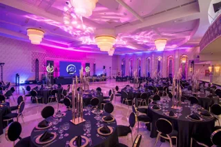
Fotografie a locației · Sursa fotografiei Poiana Brașov · Local pentru evenimente
K2 Alpin - Centru de Evenimente Private si Corporate
Un participant la o conferință găzduită de K2 Alpin descrie o neînțelegere privind rândurile rezervate lângă scenă.
Strada Poiana Ursului, 500001 Poiana Brașov+40 722 362 074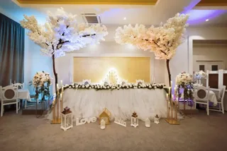
Fotografie a locației · Sursa fotografiei Brașov · Local pentru evenimente
Emotion Events
Sală de evenimente cu grădină în Brașov, cu parcare gratuită și decor lăudat la petreceri private. Întrebări despre capacitate și intrarea din spate.
Strada Mihail Kogălniceanu 15, 500090 Brașov+40 728 609 133Hartă ilustrată Brașov · Local pentru evenimente
Krongarden Kids & Events
Un părinte care a sărbătorit la Krongarden aniversarea copilului de cinci ani descrie foișorul utilat, băile separate și spațiul de joacă din interior.
Strada Codrul Cosminului 29, 500147 Brașov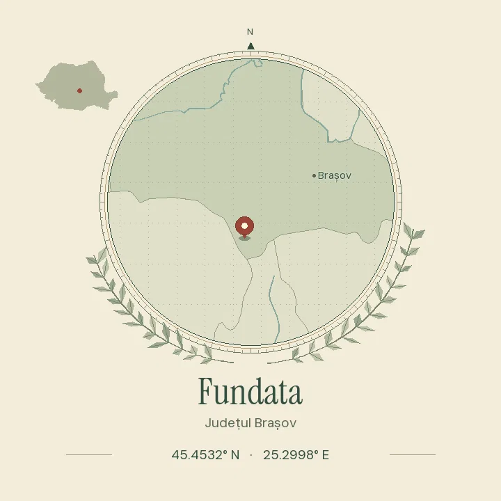
Hartă ilustrată Fundata · Hotel
Cheile Gradistei Resort Fundata
Complex montan la Fundata cu trei hoteluri, 10 vile și spa. Laude pentru priveliște, critici pentru taxa de acces de 30 de lei.
507070 Fundata+40 724 372 257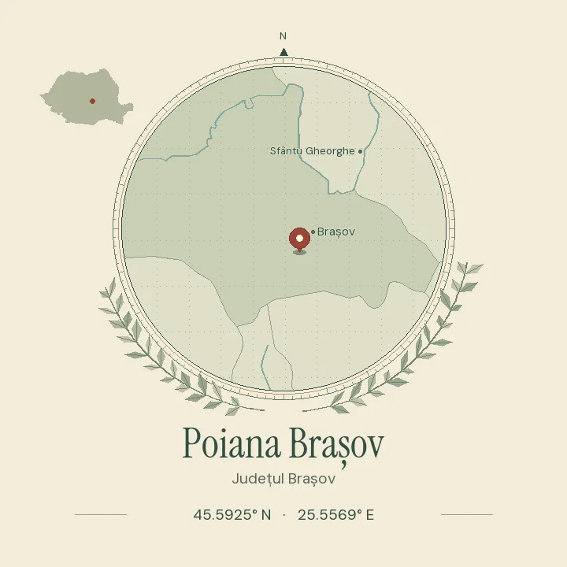
Hartă ilustrată Poiana Brașov · Hotel
Ana Hotels Sport Poiana Brașov
Hotel lângă pârtie în Poiana Brașov, cu ofertă de nuntă și ceremonie în aer liber la baza muntelui; ce laudă și ce reproșează oaspeții.
Strada Valea Dragă Poiana, 500001 Poiana Brașov+40 268 407 330
Fotografie a locației · Sursa fotografiei Moieciu de Sus · Bed & Breakfast
Vlahia Inn
Vlahia Inn, Moieciu de Sus. Fațada, gardul din lemn și copacii sunt decorați cu lumini, iar în față se vede drumul acoperit cu zăpadă.
Strada Principală 21A, 507134 Moieciu de Sus+40 745 092 192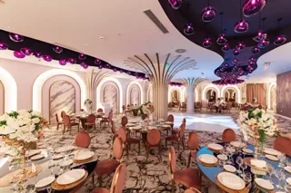
Fotografie a locației · Sursa fotografiei Timișu de Jos · Sală de nunți
3 Stejari Brasov
Hotel cu săli de nuntă la Timișu de Jos: terasă de 30–50 de locuri, saloane de până la 480 de persoane, pachet de la 100 € de persoană.
Strada Fagului, 505600 Timișu de Jos+40 268 340 050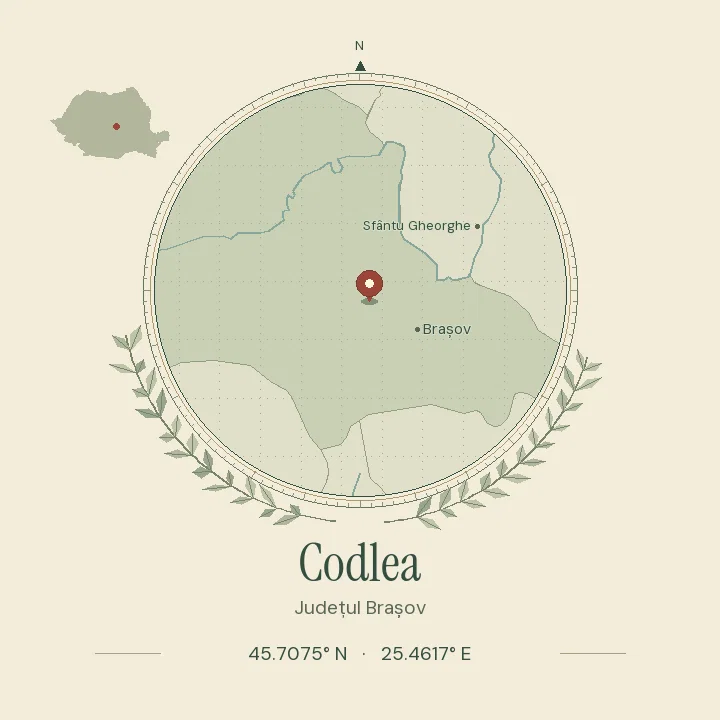
Hartă ilustrată Codlea · Restaurant
Conacul lu' Bebe
Conacul lu' Bebe. Pentru petrecere, merită să vezi unde se poate pune o masă lungă pe terasă și cum se face trecerea în interior la ploaie.
Strada Industriilor, 505100 Codlea+40 787 209 665
Fotografie a locației · Sursa fotografiei Poiana Brașov · Centru de echitație
Centrul de Echitație Poiana Brașov
Centru de echitație cu cazare și restaurant în Poiana Brașov: plimbări călare, foc de tabără pentru grupuri, 4,5 din 1.125 de evaluări.
Strada Mioriței, Brașov+40 728 026 952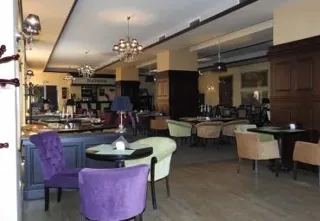
Fotografie a locației · Sursa fotografiei Brașov · Local pentru evenimente
Platinum
Un părinte care scrie despre un banchet la Platinum menționează o plată pentru meniu, dar chiar în relatare ezită între două sume.
Strada Mihail Kogălniceanu 13, 500090 Brașov+40 731 124 636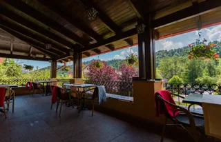
Fotografie a locației · Sursa fotografiei Moieciu de Jos · Restaurant cu specific românesc
Restaurant Turnul
Restaurant Turnul, Moieciu de Jos. Relatarea lor privește atmosfera din interior, masa și atenția persoanei care i-a servit.
Strada Principală nr. 394, 507135 Moieciu de Jos+40 752 077 677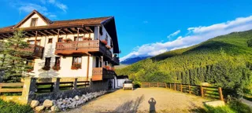
Fotografie a locației · Sursa fotografiei Șimon · Pensiune
Conacul Boieresc
Conac cu priveliște spre munte în Șimon, cu spa și spațiu de evenimente; recenzii împărțite despre personal și cereri de ofertă fără răspuns.
Strada Bălăban 1, 507028 Șimon+40 728 997 727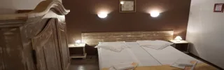
Fotografie a locației · Sursa fotografiei Moieciu de Jos · Restaurant
Podul Turcului
La Podul Turcului din Moieciu de Jos sunt 60 de locuri pe terasă și 60 în restaurant, cu spațiu de dans. Pensiunea are camere duble și triple.
DJ112F 441B, 507135 Moieciu de Jos+40 720 220 155
Fotografie a locației · Sursa fotografiei Poiana Brașov · Hotel
Denisa
Denisa, Brașov. Dacă vă pregătiți pentru nuntă în Brașov, solicitați chiar fotografia camerei pe care urmează să o primiți.
Strada Poiana Soarelui, 500001 Poiana Brașov+40 268 262 213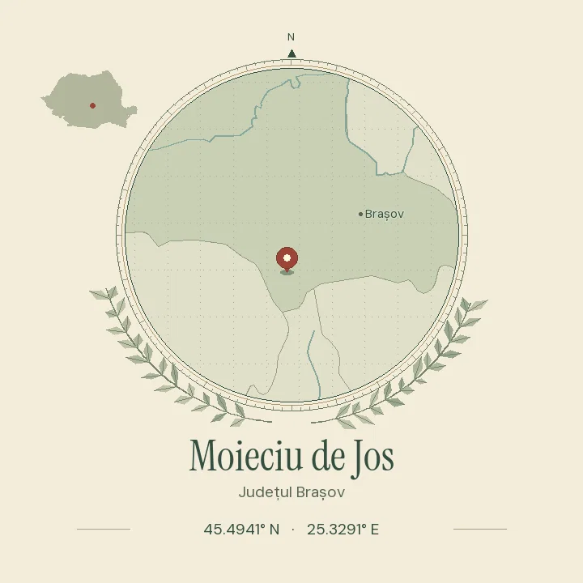
Hartă ilustrată Moieciu de Jos · Pensiune
Garden Resort by Brâncoveanu
Pensiune în Moieciu de Jos cu râu în spate, terasă de 40 de locuri și mâncare tradițională lăudată. Cazare de la 250 de lei pe noapte.
Strada Principală 378 A, 507513 Moieciu de Jos+40 722 511 312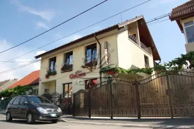
Fotografie a locației · Sursa fotografiei Brașov · Bed & Breakfast
Confort
Pensiune curată pe Strada Tablei din Brașov, care se poate închiria integral; 4,5 din 122 de evaluări. Află cum intri după miezul nopții.
Strada Tablei 27, 060274 Brașov+40 268 425 129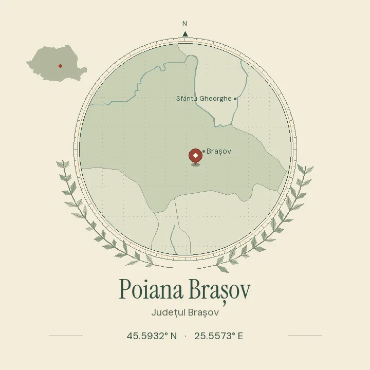
Hartă ilustrată Poiana Brașov · Spa
Ana Spa Poiana Brașov
Ana Spa Poiana Brașov, Brașov. În prezentarea Ana Spa se vede un interior cu grinzi aparente, fotolii și o masă joasă.
Strada Valea Dragă Poiana, 500001 Poiana Brașov+40 268 407 330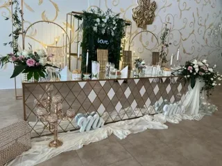
Fotografie a locației · Sursa fotografiei Timișu de Jos · Sală de nunți
Evenimente La Castel
Cort de nunți cu gresie și candelabre la Timișu de Jos, cu terasă cu bar și cazare. Capacitatea indicată variază între 60 și 400 de persoane.
505302 Timișu de Jos+40 733 255 756
Fotografie a locației · Sursa fotografiei Brașov · Centru de evenimente
Dumbrava Minunată
Restaurant cu terasă și sală de evenimente pe strada Murelor, Brașov: mâncare gătită ca acasă, porții mari. Capacitatea pentru nunți nu e publicată.
Strada Murelor 4, 500301 Brașov+40 740 250 801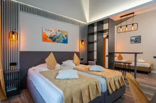
Fotografie a locației · Sursa fotografiei Brașov · Bed & Breakfast
Pensiunea Warthe
Pensiunea Warthe, Brașov. La Warthe, luați în calcul dimineața de după nuntă înainte să rezervați întregul grup.
Strada Cibinului 45, 500122 Brașov+40 793 485 053
Fotografie a locației · Sursa fotografiei Brașov · Local pentru evenimente
Conacul Albert
Conac de evenimente în Brașov cu acoperiș retractabil, ceremonie în grădină și terasă lângă sală; o nuntă recentă a avut circa 120 de invitați.
Strada Nicovalei 4, Brașov+40 752 018 857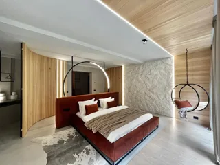
Fotografie a locației · Sursa fotografiei Predeluț · Hotel
Garden Retreat Junior
Hotel mic în Predeluț, lângă Bran, cu terasă la fiecare cameră și grădină; 4,3 din 22 de evaluări. Recenzii împărțite despre confort.
Strada Predeluț 74, 507026 Predeluț+40 745 190 710Hartă ilustrată Poiana Brașov · Restaurant
Ana Hotels Bradul Poiana Brașov
Sala Tisa la Ana Hotels Bradul este prezentată pentru nunți de până la 250 de invitați. Aflați cum se pot lega terasa, cocktailul și cazarea.
Strada Valea Dragă 5, 500001 Poiana Brașov+40 268 407 330
Fotografie a locației · Sursa fotografiei Brașov · Centru de evenimente
Sergiana Catering
Sergiana Catering, Brașov. Un client de la Sergiana descrie o cină la care ospătarii i-au lăsat răgaz să stea la masă în liniște.
Strada Mihail Kogălniceanu 15, 500090 Brașov+40 727 738 747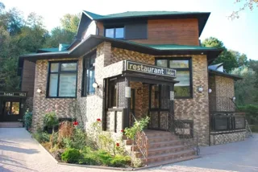
Fotografie a locației · Sursa fotografiei Șimon · Hotel
Hillden Boutique Cazare &Restaurant
Hillden Boutique Cazare &Restaurant. La Hillden din Șimon, un oaspete spune că a cerut cazare la parter și a primit un apartament la al doilea etaj.
Strada Iancu Gonțea 463, 507028 Șimon+40 741 059 061
Fotografie a locației · Sursa fotografiei Moieciu de Sus · Pensiune
Pensiunea Roua Diminetii
Pensiunea Roua Diminetii. Un grup de paisprezece prieteni a închiriat toată vila Roua Dimineții în Moieciu de Sus și povestește despre camere și ciubăr.
Strada Principală 214, 507134 Moieciu de Sus+40 745 892 241
Fotografie a locației · Sursa fotografiei Brașov · Local pentru evenimente
Garden Club
Dacă terasa este motivul pentru care te interesează proprietatea, folosește acea primă discuție pentru a defini exact ce parte din nuntă vrei afară.
Bulevardul Griviței A48, 500173 Brașov+40 711 970 012
Fotografie a locației · Sursa fotografiei Poiana Brașov · Hotel
Hotel Soimul
Hotel Soimul, Brașov. Un oaspete de la Șoimul apreciază curățenia și mărimea camerei, dar își exprimă dezamăgirea în privința micului dejun.
Valea Sticlăriei, 500001 Poiana Brașov
Fotografie a locației · Sursa fotografiei Poiana Brașov · Local pentru evenimente
Monterai
La Monterai, două prezentări ale terasei dau cifre diferite: 60 de locuri pe pagina restaurantului și 120 în prezentarea pentru evenimente.
Vila 0, Strada Poiana Soarelui 2, 500001 Poiana Brașov+40 268 262 335
Fotografie a locației · Sursa fotografiei Brașov · Hotel
Golden Time Hotel
Hotel pe Calea București din Brașov, cu restaurant, spa și 1.005 evaluări; listat ca local de evenimente, dar nunțile nu sunt descrise.
Calea București 99, 500360 Brașov+40 268 311 115
Fotografie a locației · Sursa fotografiei Poiana Brașov · Hotel
Aurelius Imparatul Romanilor
Aurelius Imparatul Romanilor. La Aurelius, o familie cu un copil mic a primit la sosire o cameră mai spațioasă decât cea rezervată, orientată spre lac și munți.
Strada Poiana lui Neagoe 15, 500001 Poiana Brașov+40 268 262 166
Hartă ilustrată Brașov · Local pentru evenimente
Jon by Chef Jon Jordache Centru de Evenimente
Un cuplu care și-a sărbătorit nunta aici în urmă cu mai mulți ani descrie o discuție despre schimbarea meniului cu puțin timp înainte de petrecere.
Strada Lucian Blaga 8 A, 500008 Brașov+40 741 003 476
Hartă ilustrată Bran · Pensiune
Garden Retreat Bran
La Garden Retreat Bran, casa Keyhouse se închiriază integral și are trei dormitoare, curte și loc de joacă. Aflați ce trebuie discutat pentru o cununie.
Strada Predeluț 72, 507025 Bran+40 745 190 710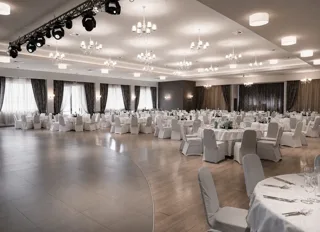
Fotografie a locației · Sursa fotografiei Ghimbav · Local pentru evenimente
Angelis Ballroom (Tess)
Sală mare și terasă cu fântână în Ghimbav, 4,3 din 543 de evaluări: ce laudă mirii, ce critică invitații și ce să treci în contract.
Calea Brașovului 2, 507075 Ghimbav+40 732 950 805Fotografie a locației · Sursa fotografiei Bran · Pensiune
Contele Vladimir
Pensiunea Contele Vladimir din Bran-Sohodol are restaurant românesc și internațional, bar și terasă cu vedere la munți. Vedeți accesul și oferta.
Strada Reitești 61, 507025 Bran+40 771 104 702Fotografie a locației · Sursa fotografiei Brașov · Hotel
Grand Hotel
La Grand Hotel, un cuplu descrie un mic dejun suficient, cu o selecție restrânsă, și spune că într-o dimineață a fost trezit de lucrări din apropiere.
Strada Gării Noua 6, 500314 Brașov+40 268 336 797Hartă ilustrată Bran · Hotel
Casa din Bran
O relatare despre Casa din Bran vine de la un grup repartizat în mai multe camere, care a întâmpinat probleme cu încălzirea și băile în timpul șederii.
Strada General Traian Moșoiu 15-19, 507025 Bran+40 741 236 557
Fotografie a locației · Sursa fotografiei Brașov · Hotel
Lux Divina
Lux Divina. Pentru nunta ta contează observația despre configurație: o sală văzută la concert spune prea puțin despre o cină cu mese și dans.
Strada 13 Decembrie 96, 500116 Brașov+40 749 115 116Hartă ilustrată Brașov · Hotel
Hotel Aro Palace
Hotel Aro Palace, Brașov. La Aro Palace puteți porni de la o ofertă de nuntă a hotelului și să cereți o completare precisă pentru terasă.
Bulevardul Eroilor 27, 500030 Brașov+40 268 478 800
Fotografie a locației · Sursa fotografiei Poiana Brașov · Hotel
Alpin Resort Hotel
Hotel cu patru restaurante, spa și piscină interioară în Poiana Brașov: ce laudă oaspeții, ce reclamă și ce să cereți în scris pentru nuntă.
Strada Poiana Doamnei 9, 500001 Poiana Brașov+40 268 262 343
Fotografie a locației · Sursa fotografiei Bran · Castel
Castelul Bran
Castelul Bran primește evenimente private în curtea interioară și în salonul de muzică al reginei Maria. Aflați capacitățile pentru ceremonie.
Strada General Traian Moșoiu 24, 507025 Bran+40 268 237 700Fotografie a locației · Sursa fotografiei Moieciu de Sus · Bed & Breakfast
Luminiţa
Luminiţa, Moieciu de Sus. La Luminița, o familie își dorea ușă între camere, dar a primit inițial o suită în plan deschis.
Strada Valea Băngăleasa 183, 507134 Moieciu de Sus+40 744 695 111Fotografie a locației · Sursa fotografiei Poiana Brașov · Restaurant cu specific european modern
Noir Poiana Brasov
Noir Poiana Brasov, Brașov. Pentru o recepție în Poiana Brașov, puteți separa alegerea decorului de alegerea meniului.
Strada Doinașului, 500001 Poiana Brașov+40 752 050 442
Fotografie a locației · Sursa fotografiei Brașov · Hotel
Conacul din Ardeal
Hotel cu salon de 300 de persoane pe Calea Feldioarei, Brașov; 4,2 din 375 de evaluări. Recenzii mixte la nunți și zgomot peste camere.
Calea Feldioarei 71A, 500483 Brașov+40 766 424 557Hartă ilustrată Bran · Restaurant
Bran Parc
Restaurant cu decor tradițional și șemineu în Vila Reit din Bran, 4,2 din 1.399 de evaluări. Papanași lăudați, dar și reclamații la gătit și parcare.
Vila Reit, Strada Sextil Pușcariu 23, 507025 Bran+40 721 578 683
Fotografie a locației · Sursa fotografiei Brașov · Hotel
Grand Hotel Belvedere
Hotel cu priveliște panoramică peste Brașov, în două clădiri separate; recenzii critice despre servicii și parcare. Ce să clarifici.
Strada Stejerișului 26, 500122 Brașov+40 738 745 073Fotografie a locației · Sursa fotografiei Brașov · Cazare în regim hotelier
Cazare Hotel Centru - Brasov
Cazare cu apartamente cu chicinetă pe strada Castelului din Brașov, nota 4,1. Păreri împărțite despre curățenie și izolarea fonică.
Strada Castelului 58, 500014 Brașov+40 773 774 370Hartă ilustrată Bran · Local pentru evenimente
TeamBuilding, Cazare Bran
TeamBuilding, Cazare Bran, Bran. O recenzie despre proprietatea din Bran vine de la cineva aflat aici cu echipa de la serviciu.
Strada Predeluț 83, 112H, 507026 Bran+40 722 609 069
Fotografie a locației · Sursa fotografiei Brașov · Pensiune
Pensiune Ambient
Pensiune Ambient. La Ambient, un călător menționează parcarea și primirea de la micul dejun printre lucrurile care i-au făcut șederea în Brașov mai ușoară.
Strada Iuliu Maniu 62, 500091 Brașov+40 268 547 171Hartă ilustrată Timișu de Jos · Hotel
Domeniul Dâmbu Morii
Complex cu sală, capelă și piscină la Timișu de Jos, cu 2.150 de evaluări și păreri împărțite. Ce să verifici la porții, camere și drumul de acces.
Strada Aluniș 4, 505302 Timișu de Jos+40 767 626 162Fotografie a locației · Sursa fotografiei Fundata · Restaurant
Restaurant Fundata Cheile Grădiștei
Restaurantul din Fundata are 600 de locuri în interior și vedere spre Bucegi și Piatra Craiului. Descoperiți bucătăria și spațiile complexului.
Comuna Fundata, nr. 124, 507070 BrasovFotografie a locației · Sursa fotografiei Timișu de Jos · Bed & Breakfast
Pensiunea Castle
Pensiunea Castle, Timișu de Jos. Pentru camerele invitaților, merită verificat la vizionare cât se aude traficul.
DN1, 500014 Timișu de Jos+40 268 339 806Fotografie a locației · Sursa fotografiei Bran · Hotel
Hanul Bran
Hanul Bran are o sală de evenimente pentru aproximativ 200 de persoane, restaurant cu preparate locale, terasă și cazare lângă castel.
Strada General Traian Moșoiu 4, 507025 Bran+40 268 236 556Fotografie a locației · Sursa fotografiei Brașov · Pensiune de familie
Pensiunea Hora
Un oaspete care ajunsese cu mașina la Pensiunea Hora își amintește că a găsit aici parcare gratuită și camere cu băi spațioase.
Strada Mirăslău 14, 500075 Brașov+40 771 330 117Hartă ilustrată Bran · Restaurant
Restaurantul Castelului Bran
Casa de Ceai a reginei Maria, la poalele Castelului Bran, servește preparate românești și europene. Descoperiți meniul și accesul la restaurant.
Strada General Traian Moșoiu 24, 507025 Bran+40 749 121 120Hartă ilustrată Hoghiz · Castel
Castelul Guthman-Valenta
Castel istoric în Hoghiz, aflat în stare de degradare, cu interiorul închis din cauza pericolului de surpare. De ce nu e încă un loc de eveniment.
507095 HoghizFotografie a locației · Sursa fotografiei Predeluț · Hotel
Belvedere International Bran - Piscina la munte cu cazare
Hotel cu piscină în Predeluț, aproape de Bran, cu recenzii foarte împărțite și o semnalare de închidere în 2026. Ce să confirmi în scris înainte de avans.
Strada Predeluț 101, 507026 Predeluț+40 752 842 813
Întrebări despre locațiile din județul Brașov
Unde pot dormi invitații în județul Brașov?
În registrul de cazare SITUR găsim Hotel Simona Halep - Poiana Brasov (54 de locuri de cazare), Pensiunea Casa Bono - Cazare Brasov (16 locuri de cazare), Kastel Transylvania (42 de locuri de cazare). Verifică ce camere sunt libere pentru noaptea evenimentului.
Ce spații sunt documentate pentru evenimente în aer liber în județul Brașov?
DIAMANT Events — Cununie în grădină. Kastel Transylvania — Ceremonie în curte sau grădină. Jardin Events — Recepție în cort de evenimente.
Care locație din județul Brașov are cele mai multe evaluări Google?
Castelul Bran are 115.361 de evaluări în profilul Google folosit la documentare. Evaluările acoperă și alte experiențe la proprietate, inclusiv vizitele fără eveniment.
Unde apare o intrare accesibilă în județul Brașov?
Profilurile Google indică o intrare accesibilă la DIAMANT Events, MK1930 Event Barn – Nunti & Evenimente Brasov, Naturalia Inn. Pentru o cununie în exterior, cere detalii despre traseul dintre intrare și zona cu scaune.